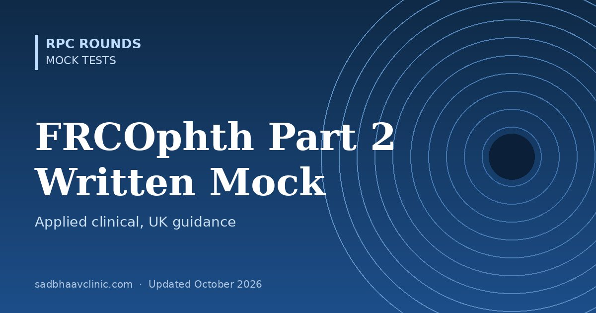

FRCOphth Part 2 Written Mock Test: 50 MCQs with UK Guidance
Last updated: October 2026
A timed 50-question mock in the style of the Royal College of Ophthalmologists Part 2 Written examination: applied clinical knowledge, UK guidance (NICE, RCOphth, DVLA, GMC) and professional practice.
- The real exam: two papers of 90 multiple-choice questions, delivered online, usually twice a year.
- This mock: 50 single-best-answer questions in 50 minutes covering glaucoma, medical retina, vitreoretina, uveitis, cornea, oculoplastics, lens, paediatrics, neuro-ophthalmology and professional practice.
- UK-specific content such as NICE thresholds, DVLA standards and certification of vision impairment.
Planning to work or train abroad? Read our guide to ophthalmology exams abroad for formats, eligibility and official links.


Want thousands more practice questions?
OKAT Decoded covers the same core ophthalmology curriculum in 10,200 original MCQs, every answer explained, with 18 full-length mock tests.
All questions are original and written for practice. They are not taken from any past paper, and this test is not affiliated with or endorsed by the examining body. Exam formats change: confirm details on the official website.
📘 Want more exam-ready material? See Most Commons in Ophthalmology on Kindle, or browse all my books.
Looking for an eye specialist in Ahmedabad? Learn about our Eye Department or book a consultation with Dr. Dhaval Patel.